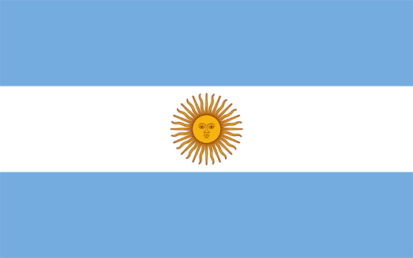

Argentina
Argentina, oficiálně Argentinská republika (španělsky República Argentina), je stát ležící na jihu Jižní Ameriky s 4984 km dlouhým pobřežím Atlantiku. Na severu hraničí s Bolívií (832 km) a Paraguayí (1880 km), na východě s Brazílií (1224 km) a Uruguayí (579 km) a na západě s Chile (5150 km). Počet obyvatel přesahuje 40 milionů. Hlavním městem je Buenos Aires. Většina obyvatel se hlásí ke katolické církvi a mluví španělsky.
Argentina je se svými 2 780 400 km² osmou největší zemí světa, čtvrtou největší na americkém kontinentu a největší španělskojazyčnou zemí planety. Má druhou největší ekonomiku v Jižní Americe a druhou nejvyšší kvalitu života. Je členem G 20. Spolu s ostatními státy v oblasti vytváří sdružení volného obchodu Mercosur a politické společenství Unie jihoamerických národů, jež mělo být vytvářeno podle vzoru Evropské unie, v posledních letech však uvízlo na mrtvém bodě.
Argentina je prezidentská republika a federální stát rozdělený na 23 provincií a jedno autonomní město, Buenos Aires. Každá provincie má vlastní ústavu. Argentina si činí nárok na část Antarktidy a s Velkou Británií vede dlouhodobý spor o Falklandy (Malvíny) a Jižní Georgii a Jižní Sandwichovy ostrovy.
Historie
Starší dějiny Argentiny
Do doby, než do země pronikli Evropané, žily v severozápadní oblasti And významné kulturní národy, které obývaly sídliště podobná městům. Na jihu přebývala společenství sběračů a lovců. Kolem roku 1480 obsadili rozsáhlé části Inkové. V roce 1516 přistála u ústí La Platy španělsko-portugalská výprava Solísova (viz výše). Nejprve patřilo území Argentiny ke španělskému místokrálovství Peru. Od r. 1536 Španělé kolonizovali území a původní obyvatele Arakuánce a Patagonce téměř vyhubili. Roku 1776 bylo zřízeno místokrálovství Río de la Plata, které zahrnovalo území Argentiny, Bolívie, Paraguaye a Uruguaye. V roce 1810 byl sesazen místokrál. Roku 1816 byla vyhlášena nezávislost Spojených provincií Río de la Plata, tak vznikl za diktatury Juana Manuela de Rosas' jednotný stát. Roku 1819 se Argentina stala federativním státem. Bezprostředně po vyhlášení nezávislosti vypukla v zemi dlouholetá občanská válka mezi centralisty a federalisty. Argentina se zúčastnila paraguayské války při níž v roce 1870 zabrala region Misiones a část regionu Chaco. V roce 1880 byla přičleněna Patagonie.
Peronismus
Velkou hospodářskou krizí na konci 20. let 20. století skončila doba velkého rozkvětu argentinské ekonomiky. V následujících letech převzali vládu konzervativní vlastníci půdy a vojenské kruhy a v čele státu se střídaly civilní vlády s vojenskými. Za reformního, ale i populistického politika platil po dlouhou dobu dvakrát zvolený Juan Domingo Perón, obviňovaný ze sociální demagogie a sympatií k fašismu. Po něm získala jméno politika peronismu, která se v praxi projevovala rozsáhlým znárodňováním, podporou odborů, snahou o zlepšení sociálního postavení a rozšíření politických práv dělníků i nejchudších venkovanů, posilováním prezidentské autority a antiklerikalismem (v r. 1955 argentinskou vládu exkomunikoval papež Pius XII.). Po porážce Třetí říše uteklo do Argentiny mnoho nacistických pohlavárů, např. Adolf Eichmann nebo Josef Mengele. Perón zastával úřad prezidenta republiky pro funkční období 1946–1952 a 1952–1958. Nicméně sílící bouře, které jeho vládu v padesátých letech provázely, nakonec vedly k tomu, že se na pozvání generála Franka roku 1955 uchýlil do madridského exilu. Následně čelila Argentina stupňující se politické krizi, provázené vojenskými puči a vlnou terorismu, která vrcholila v roce 1970. Nakonec se Juan Domingo Perón vrátil z exilu a stal se roku 1973 potřetí prezidentem Argentiny, kteréžto funkční období ukončila hned následujícího roku jeho smrt.
Vojenská diktatura
Po Perónově smrti svrhly 23. března 1976 vojenské kruhy vládu formálně vedenou jeho manželkou Isabelitou Maríou Estelou (faktickou moc měl v rukou José López Rega), které okamžitě zahájily tzv. špinavou válku (Guerra Sucia) proti svým odpůrcům; reagovaly tak na vzestup politického násilí, ke kterému výrazně přispěly ozbrojené formace peronistické levice – tzv. Montoneros. Vojenská junta, za podpory USA (ministr zahraničí Henry Kissinger) a s počátečním souhlasem vlivné katolické církve, zahájila proces tzv. národní reorganizace (Proceso de Reorganización Nacional), jehož cílem bylo argentinskou společnost kombinací neoliberálních ekonomických reforem a brutální represe atomizovat a depolitizovat. Během vlády vojenské junty a špinavé války pod záštitou operace Kondor zmizely beze stopy tisíce občanů. Vláda vojenské junty se taktéž potýkala nejenom se špatnou vnitropolitickou ale i ekonomickou situací a aby vláda odvrátila pozornost od vnitřních problémů a upevnila si své postavení, zahájila válku o Falklandy, Argentinci nazývané Malvíny. Vláda se především domnívala, že to bude rychlé vítězství (neočekávali výraznější reakci ze strany Británie pro toto malé a od Británie značně odlehlé území), které jí pomůže snadno si upevnit svoji pozici v zemi. Margaret Thatcherová však na útok Argentiny zareagovala nekompromisním protiútokem, který pohřbil myšlenku rychlého a snadného vítězství Argentiny. Porážka v této krátké válce s Velkou Británií o falklandské souostroví v dubnu 1982 jen uspíšila pád vojenské junty.
Obnovení demokracie
V říjnu 1983 se po dlouhé době opět konaly svobodné prezidentské volby, jejichž vítězem se stal civilista a odpůrce junty Raúl Alfonsín. Během demokratizačního procesu se dostávaly na světlo mocenské prostředky vojenské vlády: mučení, vraždy, masové popravy, tzv. lety smrti (vuelos de la muerte – shazování živých lidí z vojenských letadel do Atlantiku) a strategie mizení lidí (tzv. desaparecidos), kterým podle oficiální zprávy o porušování lidských práv za vojenské diktatury Nuncá más („Nikdy víc“) padlo za oběť kolem 30 000 Argentinců. Jen samotné „lety smrti“ si vyžádaly 4000 obětí. Několik hlavních představitelů vojenského režimu bylo v roce 1985 odsouzeno k dlouholetému vězení. Prezident Alfonsín byl nakonec pod tlakem armády nucen dvěma spornými zákony (Punto final a Ley de obediencia débita) vyšetřování zločinů vojenského režimu výrazně omezit. Znovu je uvedl do pohybu prezident Néstor Kirchner, někdejší stoupenec peronistické levice (vládl v letech 2003–2007), a pokračovala v něm i prezidentka Cristina Fernández de Kirchner (mezi roky 2007 a 2015).
Argentinská finanční krize
Během prezidentské éry Carlose Menema (1989–1999) z Justicialistické strany, která je formální dědičkou peronismu, se vyšetřování zločinů junty dostalo na vedlejší kolej. Menemovy ekonomické reformy po dílčích úspěších (redukce státní správy, snížení inflace) nakonec vyústily v souvislosti s ekonomickou krizí v některých zemích Latinské Ameriky a Asie v hlubokou finanční krizi, k níž přispělo odhalení několika korupčních afér i rostoucí nezaměstnanost a která zapříčinila dvouletou politickou nestabilitu (v letech 2001–2003 se v úřadu vystřídali čtyři prezidenti).
Obyvatelstvo
Argentina měla podle sčítání v roce 2001 asi 36 260 130 obyvatel; to odpovídá hustotě asi 13 obyvatel/km². Podle sčítání z roku 2010 to bylo 40 091 359 obyvatel. Přibližně 87 % obyvatel žije ve městech s více než 2 000 obyvateli, z čehož 11,5 milionu připadá na aglomeraci Gran Buenos Aires, která má hustotu obyvatelstva asi 2 989 obyvatel/km². Město a celá provincie Buenos Aires mají celkem 16,6 milionu, provincie Córdoba a Santa Fe každá asi 3 miliony obyvatel, čili v těchto třech, v centrální části země ležících provinciích, žije více než 60 % obyvatel země. Zbývající, vzdálenější části země jsou osídleny naproti tomu velmi řídce, především na suchém jihu, kde připadají na kilometr čtvereční pouze asi tři obyvatelé.
Geografie
Argentina je součástí regionu Cono Sur. Zemi lze rozdělit zhruba do tří částí: úrodné pampy v severní polovině země, roviny Patagonie táhnoucí se od jižní poloviny až k Ohňové zemi (Tierra de Fuego) a horské masivy And na západě na hranicích s Chile. Nejvyšší hora And a celé západní polokoule, Aconcagua, leží právě v Argentině. Do severních provincií Salta, Formosa, Chaco, Santiago del Estero a Santa Fé zasahuje z Paraguaye rozsáhlá planina Gran Chaco. Argentina si formálně nárokuje i část území Antarktidy (tzv. Argentinská Antarktida) a několik souostroví v jižním Atlantiku, kde panuje arktické a subarktické podnebí. Území Argentiny je z 10,7 % pokryto lesními porosty, zemědělská půda zaujímá 53 % rozlohy státu. Mezi hlavní řeky patří Paraguay, Bermejo, Colorado, Uruguay a největší řeka Paraná. Klima je na většině území mírné. Největšími argentinskými městy jsou Buenos Aires (3 043 400, s aglomerací, tzv. Gran Buenos Aires, 11 miliónů), Córdoba (1 208 700), Rosario (1 119 000), Mendoza (773 100), La Plata (643 000).

{kind=link}
{kind=link}